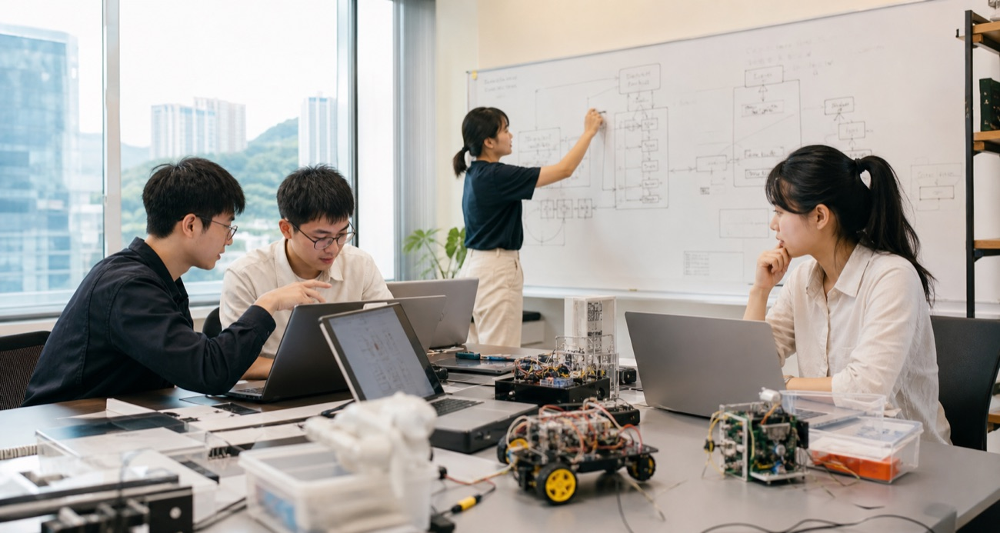

Evaluate
Structure venture, patent, and pitch-deck assessment so expert, peer, crowd, and AI judgments can be compared and improved.
AI-native venture building and evaluation
A live research and education lab at HKU School of Innovation building systems that help founders, students, universities, and ecosystem partners evaluate ventures, design experiments, and move promising ideas toward deployment.

Overview
The Venture Engineering Lab studies a practical bottleneck in innovation: how early-stage ventures are judged before their value is knowable. The lab translates that research into tools for venture evaluation, AI mentorship, policy monitoring, and AI-native entrepreneurship education.
Structure venture, patent, and pitch-deck assessment so expert, peer, crowd, and AI judgments can be compared and improved.
Help founders and student teams turn uncertainty into testable hypotheses, field experiments, and evidence-based decisions.
Convert research findings into open courses, capstone projects, and AI-native learning experiences for venture builders.
Walkthrough
Inspired by product-style research labs, Venture Engineering Lab is organized around repeatable workflows: intake, diagnosis, evaluation, mentoring, experimentation, and learning. Each workflow can serve real users while also generating research-grade evidence.
Teams submit venture ideas, pitch decks, patents, or project briefs with structured context.
The system identifies claims, categories, evidence gaps, stakeholders, and uncertainty points.
Experts, peers, crowds, and AI evaluators assess the venture through comparable rubrics.
AI mentors give interim feedback, help founders reframe problems, and prepare for human review.
Teams convert feedback into customer-discovery, prototype, market, or licensing experiments.
Results are tracked against assumptions, milestones, and evaluator disagreement.
Course and capstone teams use the same workflow to learn venture methods by doing.
Aggregated patterns support policy analytics, program design, and regional ecosystem monitoring.
System Architecture

Structured venture, team, patent, pitch, mentor, and ecosystem records.
Expert, peer, crowd, and AI assessment channels with comparable rubrics.
AI-guided reframing, feedback, experiment planning, and learning support.
Field experiments and analytics on judgment, legitimacy, entry, and innovation infrastructure.
Lab Projects
The lab works with HKU innovation and entrepreneurship units to build systems that can be used by founders, scientists, program teams, students, and policy partners.
Longitudinal indicators for Greater Bay Area innovation and entrepreneurship.
Assessment tools for university patent disclosures, filing readiness, and licensing evidence.
Structured venture assessment paired with AI mentors for founder feedback between human sessions.
An online incubator for AI-enabled one-person companies and solo-founder workflows.
Reusable program-running instruments for cohort management, evaluation, and learning.
Public learning experiences in AI-native entrepreneurship and K12 AI-native game design.
For Learners

The lab runs capstone tracks for undergraduate and master's students at HKU and from other institutions. Projects are scoped so student teams can build useful modules for active lab systems, not just final reports.
Build features for AI Career Coach, TriEval, AI Literacy Passport, PolicyIntel, and AI mentors.
Create readiness scorers, business model explorers, and community pulse tools.
Design copilots for customer discovery, prototype decisions, and project-based learning.
Study AI adoption, one-person companies, and founder workflows in real settings.
FAQ
Students can join through capstone projects, research assistantships, and course-linked venture-building work.
Partner units can work with the lab on evaluation systems, mentoring tools, policy analytics, and program infrastructure.
Founders and research teams can use lab workflows to clarify venture assumptions, prepare for evaluation, and design evidence-generating experiments.
The lab welcomes collaborators studying entrepreneurship, AI evaluation, organizational theory, innovation policy, and technology commercialization.
Contact
Venture Engineering Lab is directed by Zhuoxuan (Fanny) Li at HKU School of Innovation. For collaboration, student projects, or ecosystem partnerships, get in touch by email.